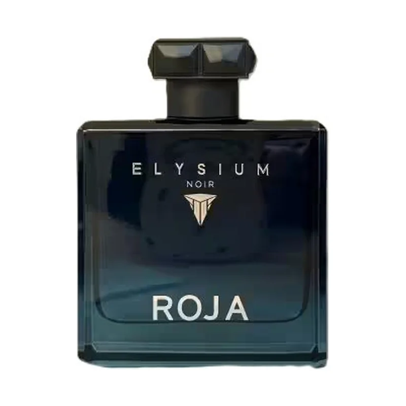
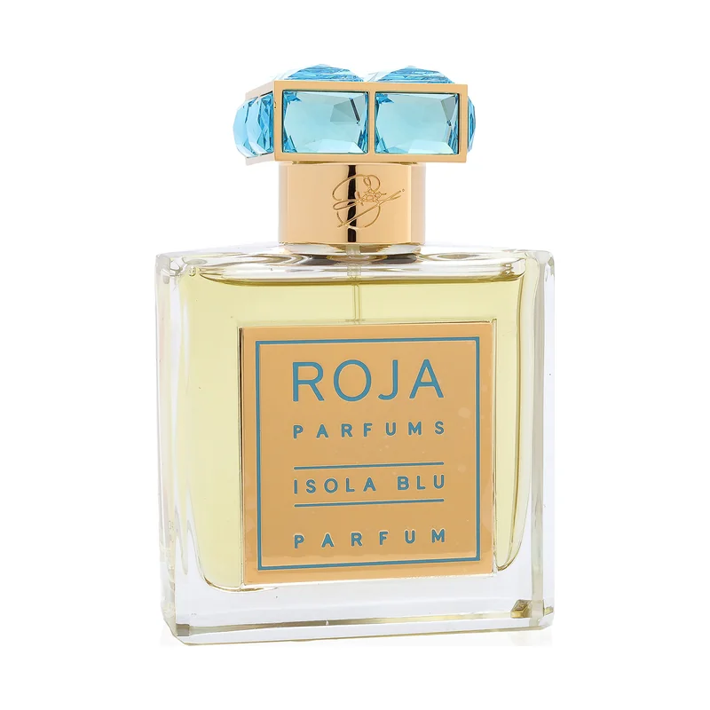
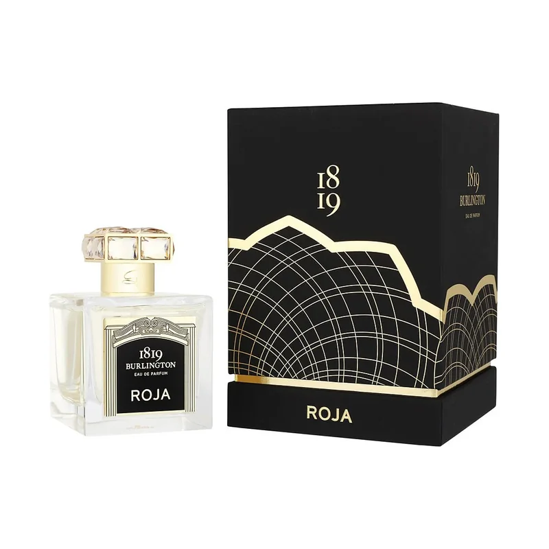

Roja Parfums
Elysium Noir Eau de Parfum
α Alpha Niche · Eau de Parfum · 2025 Future buy
Randy's rating—/10
Public rating7/10
Overall R—/28
Normalized N—
R and N are left blank until Randy has worn and rated it. How scores work
Notes
Top notes
- lavender
- geranium
- bergamot
- lemon
- mandarin
- orange
- helvetolide
- hedione
Heart notes
- blackberry
- rose
Base notes
- ambroxan
- juniper berry
- frankincense
- patchouli
- cardamom
- leather
- pink pepper
- cypriol
- cypress
- sandalwood
Details
| House | Roja Parfums |
|---|---|
| Type | Niche · α Alpha |
| Concentration | Eau de Parfum |
| Released | 2025 |
| Perfumer | Antoine Cotton |
| Scent family | Aromatic, Woody, Citrus |
| Best seasons | Spring, Fall |
| Similar to | Roja Elysium Pour Homme YSL Y Eau de Parfum Versace Dylan Blue EDT |
Sources
Fragrantica 3.99/5 (about 8.0/10) from 403 votes; Parfumo 5.8/10 from 243 ratings (longevity 6.3, sillage 6.1). Split reception (Parfumo much lower). Vote-weighted and rounded to 7. Checked 2026-11-14.
Other Suggestions
-
 Roja ParfumsElysium Pour Homme ParfumRandy9.75Public 9N 0.940
Roja ParfumsElysium Pour Homme ParfumRandy9.75Public 9N 0.940 -
 Roja ParfumsElysium Pour Homme Parfum CologneRandy—Public 9N —
Roja ParfumsElysium Pour Homme Parfum CologneRandy—Public 9N — -

Roja ParfumsIsola Blu ParfumRandy—Public 9N — -

Roja ParfumsBurlington 1819 Eau de ParfumRandy—Public 9N — -
 Parfums de MarlyPercivalRandy8.75Public 8N 0.840
Parfums de MarlyPercivalRandy8.75Public 8N 0.840